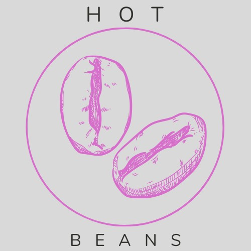

Welcome to Hot Beans

Who We Are
Hot Beans is a dynamic web development agency dedicated to crafting high-performance, visually stunning, and user-friendly websites. With a team of passionate designers, developers, and digital strategists, we blend creativity with cutting-edge technology to help businesses establish a powerful online presence.
Our Mission
We aim to empower businesses with innovative and customized web solutions that enhance their digital footprint, drive engagement, and foster growth. At Hot Beans, we believe that every brand deserves a website that not only looks amazing but also delivers exceptional functionality and results.
Who We Are
Hot Beans is a dynamic web development agency dedicated to crafting high-performance, visually stunning, and user-friendly websites. With a team of passionate designers, developers, and digital strategists, we blend creativity with cutting-edge technology to help businesses establish a powerful online presence.
Our Mission
We aim to empower businesses with innovative and customized web solutions that enhance their digital footprint, drive engagement, and foster growth. At Hot Beans, we believe that every brand deserves a website that not only looks amazing but also delivers exceptional functionality and results.